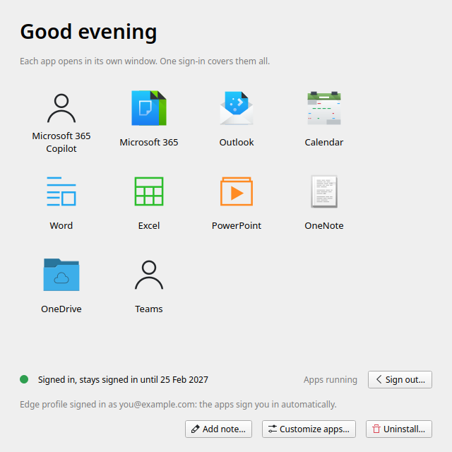

msol opens Word, Excel, Outlook, Teams and the other Microsoft 365 web apps in windows of their own, each with its own taskbar entry and icon, just like installed apps. Sign in once and every app is signed in, and you stay signed in after a restart.

The apps are Microsoft's own web apps. msol is the small layer around them that makes them behave like desktop software on KDE Plasma.
Every app gets its own window, taskbar entry, title-bar icon and menu entry. Alt+Tab between Outlook and Word like on any desktop.
All apps share one dedicated Edge profile, so one sign-in covers them all, including work accounts with multi-factor sign-in.
Close every app or reboot: you are still signed in next time. The guided sign-in sets up Edge's automatic sign-in for work accounts.
Apps run natively on Wayland, so text stays crisp with fractional scaling and the GPU drivers of your system are used.
Open Excel from Outlook's app menu and it opens as the Excel app window, not as a browser tab.
Office apps are shown by default; add SharePoint, Loop, Planner, Power BI, Viva and more, with generic or official icons.
For Debian, Ubuntu, Kubuntu and KDE neon with KDE Plasma 6 on Wayland.
apt upgrade keeps msol up to date:
sudo curl -fsSLo /usr/share/keyrings/msol-archive-keyring.gpg https://products.lemche.net/msol/apt/msol-archive-keyring.gpg
sudo curl -fsSLo /etc/apt/sources.list.d/msol.sources https://products.lemche.net/msol/apt/msol.sources
sudo chmod 644 /usr/share/keyrings/msol-archive-keyring.gpg /etc/apt/sources.list.d/msol.sources
sudo apt update && sudo apt install msolmsol_<version>_all.deb from the
latest release and run
sudo apt install ./msol_*_all.deb; it adds the repository for you.Prefer the source? Clone the repository and run ./msol edge-install,
then ./msol install. See the README.
msol edge-update.~/.local/share/msol/edge-profile).msol uninstall --all),
then sudo apt remove msol.